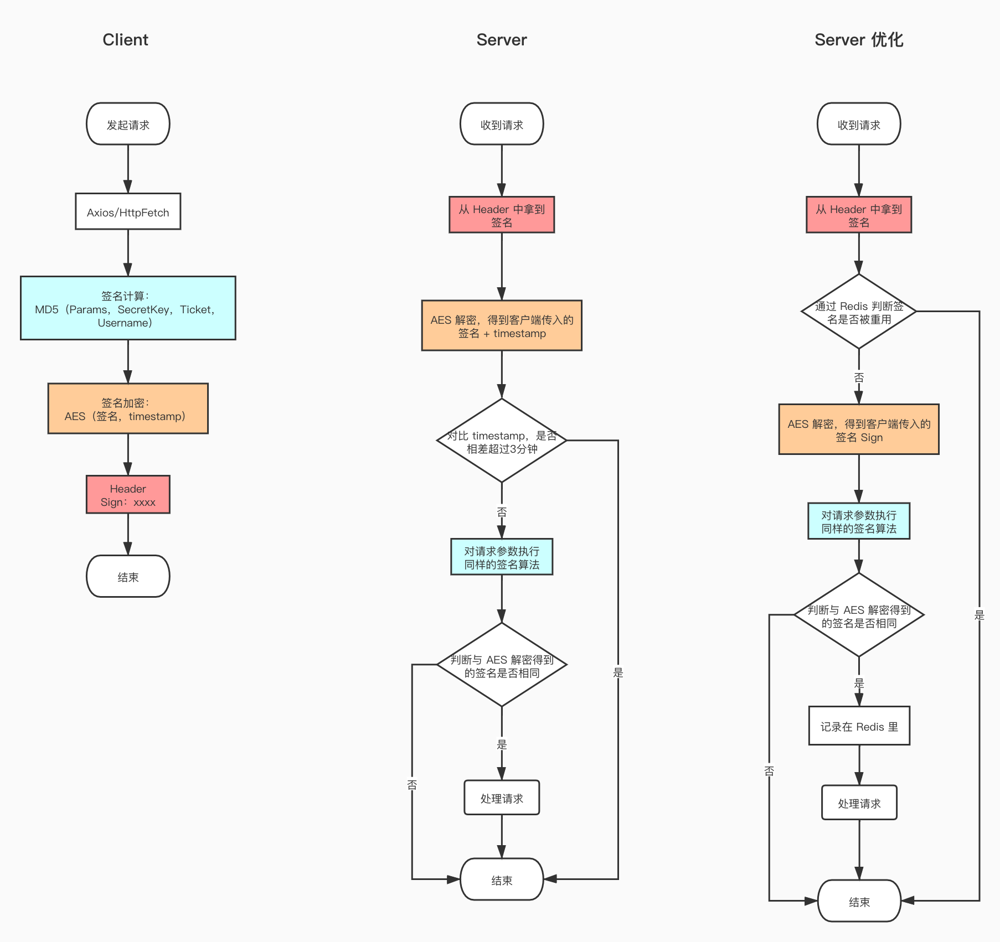
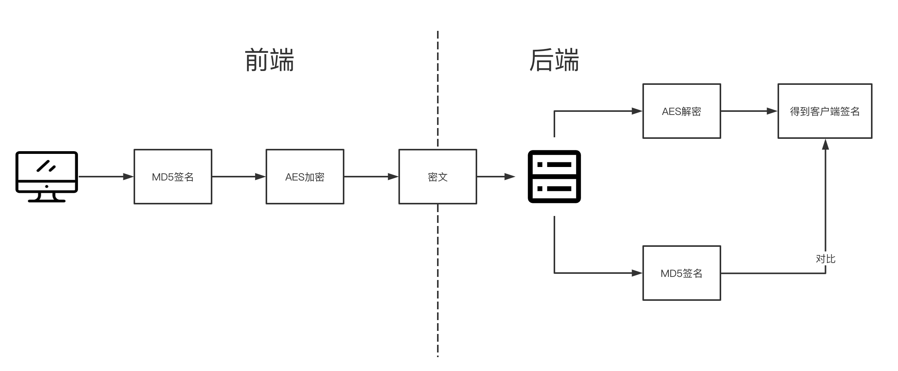

最近参与开发公司一个重要的数据产品，因为数据安全级别要求较高，常用的权限控制方案无法防止用户通过接口或爬虫工具进行恶意访问和数据抓取，故设计此方案用于保证接口安全。
这套方案可以起到以下防护：
- 每次发起请求时，需通过特定算法对请求参数进行签名且后端验证通过后才会放行，避免随意抓取数据。
- 生成的签名只对本用户的本次请求（参数）有效，避免重放攻击。
- 适用于各种请求和传参方式，如GET, POST。
加密算法分类
作为前置知识，先来介绍一下加密算法的分类。
对称加密
会话前双方约定一个固定的密钥，客户端用此密钥进行加密，服务端用此密钥进行解密。
特点：算法公开，计算量小，加密速度快。
常见算法：AES。
非对称加密
两个密钥：公钥和私钥，客户端使用公钥进行加密，服务端用私钥进行解密。
特点：加密和解密时间长、速度慢，只适合对少量的数据进行加密。
使用场景：https 会话前期、CA 数字证书、信息加密等。
常见算法：RSA。
Hash 算法
把任意长度的输入，通过 hash 算法，变换成固定长度的输出。
特点：不可逆，易计算。
使用场景：文件或字符串一致性校验、数字签名、鉴权协议。
常见算法：MD5
方案流程图

关键点
client 端（浏览器）
参数处理
GET 请求
因为 GET 请求传输到服务端是没有数据类型的，即服务端收到的都是字符串。所以使用 url 键值对的格式生成字符串。
POST、PUT、DELETE 请求
- 如果
content-type是application/json，服务端接收到的是有数据类型的，故将 body 进行json.stringify序列化即可 - 如果
content-type是application/x-www-form-urlencoded，服务端收到的是类似 url 编码的形式，使用类似GET请求的方式处理 - 如果
content-type是multipart/form-data，为文件上传，这里不做处理
签名加密时 timestamp 的作用
- 在 server 端使用方案1 的情况下，timestamp 用于判断签名是否超时。
- 在 server 端使用方案2 的情况下，timestamp 保证每次发请求的 sign 唯一，类似于加盐，如果不让时间戳参与生成的话，相同的请求参数会生成相同的 sign，用户可以用这个 sign 一直请求，虽然不会有太大危害，但是会有不必要的业务处理。
server 端（node）
方案一，不使用 Redis：
使用 timestamp 来防止接口被重复利用，客户端发请求时带上当前时间的时间戳，服务端接收到 timestamp 后与当前时间进行对比，如果时间差大于3分钟，则认为是无效请求。
这个方案的优点是不依赖任何组件，性能更好，但由于不能保证客户端时间（也是浏览器端时间）的准确性，此方案可能存在隐患。故采用方案二:
方案二，使 Resis：
使用 redis 将每次请求传过来的 sign 进行存储，如果接收到的请求 sign 存在于 redis 里，则认为是无效请求，保证每个请求只能被用一次。这种方案不依赖客户端时间，同时引入Redis后可以实现更多的功能，如服务端限流（挖个坑之后填上）。
server 端注意事项：在进行参数校验前，先判断是不是一个白名单（或文件上传下载）请求，如果是需要直接放行。
方案中配合使用了 hash 算法和对称加密算法，hash 算法用于将参与加密的数据生成一个唯一签名，因为不需要还原这个数据，所以使用了 md5 算法。之后使用 AES 将这个签名和时间戳一起进行了加密，用来传给后端。
